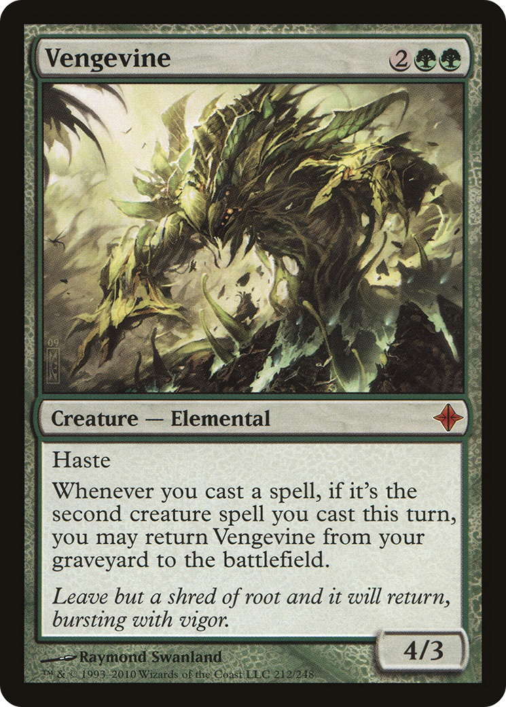
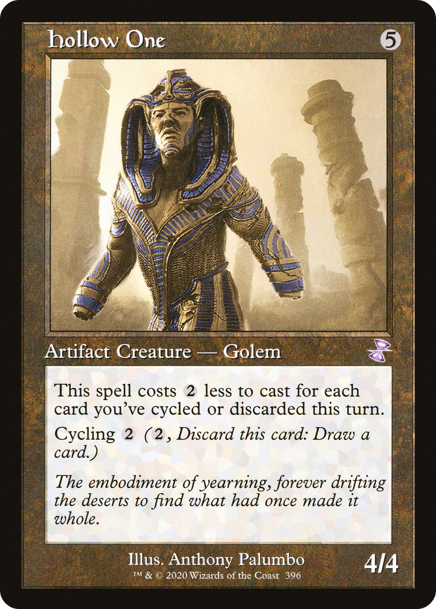

How I got into Magic: the Gathering
MTG is a strategy trading card game made by Wizards of the Coast, a subsidiary of Hasbro. The game was first released in 1993 with the debut set Limited Edition: Alpha and the second print run fixing major print issues Limited Edition: Beta. Since that first release, there have been around 170 new sets each introducing 200-300 new cards each set.
I was first introduced to MTG at 10 years old at a Cub Scouts event I had gone to with my dad. As part of this event a local gamestore had a booth set up where scouts could learn the game with free starter decks. I wasn't super into it then, but my dad insisted that I atleast tried it since it was something he was into back in high school and college, but he had given all of his cards away to my oldest cousin who was much more into it than him. Well 2-3 years later, 2 of my cousins and 1 of their friends was visiting for a concert and their trip happened to coincide with my birthday so he was like, "How would you like to learn MTG?" and I was like, "Yeah lets do it". We go to the store local to me, pick up a preconstructed deck, and learn how to play the game falling in love with it in the process.
My Favorite Deck
With there being 36,000+ unique cards, its hard to just pick one or two as a favorite. Despite this 2 cards standout as being my favorites- Vengevine and Hollow One.

